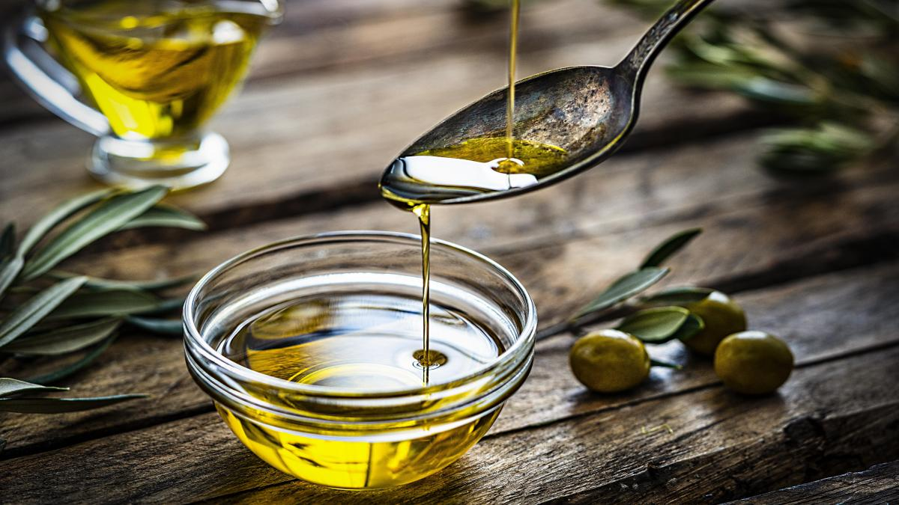

Preparación: 15 min
Cocción: 15 min
Total: 30 min
Raciones: 2
Ingredientes
- 4 cucharadas de aceite de oliva virgen extra

- 1 cebolla hermosa
- 4 dientes de ajo
- 500g de coliflor
- 2 tazas de caldo vegetal
- 2 cucharadas de levadura nutricional
- 1/4 de taza de leche de almendras
- Sal

Elaboración paso a paso
- Preparar la cebolla: Picaremos bien fina la cebolla y la sofreiremos en el aceite hasta que esté translucida
- Añadir los ajos: Añadiremos entonces los ajos prensados o picados finos. Sofreiremos medio minuto más.
- Preparar la coliflor: Incorporaremos la coliflor troceada o separada en flores, el caldo y dejaremos cocer hasta que esté tierna, seguramente se consumirá gran parte del líquido
- Añadir el resto de ingredientes: Echaremos la preparación en el vaso de la batidora y añadiremos leche, la levadura, los granos de pimienta y un poco de sal al gusto. Batiremos hasta conseguir una textura fina